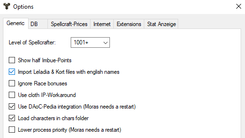

Settings - General

In this dialog, general program options are set. The dialog about options
is called ... in the options menu.
There are currently only 2 setting options:
Stage of the Bann wizard
Here, the experience level of the bane wizard can be set. The level mainly
determines how well the overload works.
Show half imbue points
Determines how the IP of a spell jewel is displayed in the bonus
tab.
Import Leladia & Kort files as
English names
If this option is active, the names of objects will be entered as original
names.
If it is deactivated, then as German names.